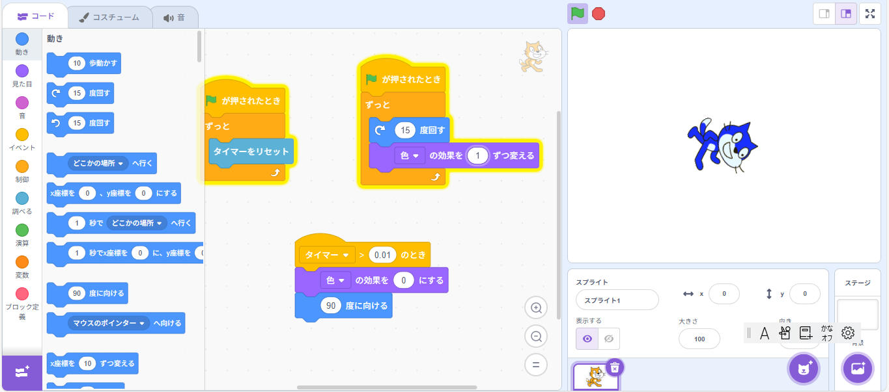

Scratchとは？
Scratchは、子どもでも簡単にプログラミングができる、無料のビジュアルプログラミング言語です。ブロックを組み合わせて、ゲームやアニメーションを作ることができます。
Scratchの特徴
- 無料で使える
- ブロックをドラッグ＆ドロップしてプログラム
- 日本語対応でわかりやすい
- 世界中の人と作品を共有できる
- 教育にも使われている
Scratchのメリット
- 無料で使える
- 簡単なブロック操作でプログラミングできる
- 日本語対応で子どもにもわかりやすい
- 作品を世界中と共有できる
- 他の人の作品から学べる
- プログラミングの基礎が楽しく学べる
Scratchのデメリット
- 高度なプログラミングや複雑な処理には向いていない
- 実際のコード（テキストベース）に慣れるのが遅れる可能性がある
- プロジェクトが大きくなると動作が重くなることがある
- 一部の拡張機能はインターネット環境が必要
Scratchで守るべきルール
Scratchはみんなが楽しく安全に使える場所です。以下のルールを守りましょう：
- 人を傷つける言葉や暴力的な表現を使わない
- 他の人の作品をコピーする場合は「リミックス」して、クレジットをつける
- 本名や住所、連絡先などの個人情報を公開しない
- 作品はだれでも楽しめる安全な内容にする
- Scratchのコミュニティガイドラインを守る
Scratchの始め方
- 公式サイトにアクセス（scratch.mit.edu）
- アカウントを作成
- 「作る」ボタンを押してプロジェクトを開始
- スプライトやブロックを使って作品を作る
作品紹介（例）
以下はScratchで作られた作品の例です：
Scratchのコード例
以下は、実際のScratchのプログラム画面の画像です。
